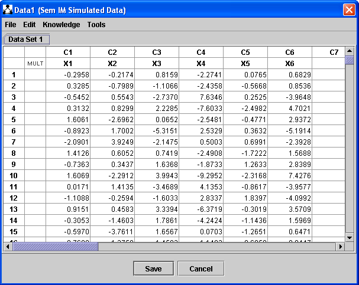
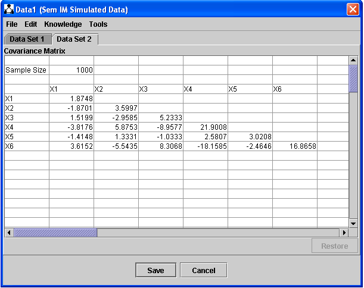

Data Set List |
A data set list stores a list of one or more data set, possibly of different types. One of data sets is designated as "active," in the sense that (a) it's the one you see when you double click the Data Box, and (b) it's the one that's used downstream by, e.g., by search and estimation algorithms. The types of data sets that can currently be stored in a data set list are:
These types of data sets each has a distinctive appearance when being edited, as shown below.
For information on how to load data files, see the help file for Data Loader.
A tabular data set contain all continuous data (that is, a continuous data set) looks like this:

These data sets can be edited directly. For information on how to edit tabular data sets in the Data Editor, see Editing Tabular Data Set.
A covariance matrix in Tetrad is a symmetric, positive definite matrix M with dimension equal to the number of variables in the data set, associated with a sample size. If the list of variables in <X1, X2, X3, X4, X5>, then var(Xi) = m(i, i) and covariances(Xi, Xj) = m(i, j) The sample size may be any number greater than zero. Here is what a covariance matrix looks like in the data editor:

Only the lower triangle is shown, since the matrix is symmetric. For information on how to edit a covariance matrix in the Data Editor, see Editing Covariance/Correlation Matrices.
A correlation matrix in Tetrad behaves just like a covariance matrix (it is one!), except that it is labelled as "Correlation Matrix," has a diagonal consisting entirely of 1.0's, and shows correlations instead of covariances. That is, if the list of variables in <X1, X2, X3, X4, X5>, as in the above example, then a symmetric, positive dfinite matrix M is shown such that then m(i, j) is the correlation of Xi and Xj and in particular m(i, i) = 1.0 for all i, j. The sample size may be any number greater than zero. Here is what a covariance matrix looks like in the data editor (notice that only the lower triangle is shown since it is symmetric):

Notice that these last images shows tabs that let you switch back and forth between three different data sets. All three are stored in the Data Box; if you want to, say, search over a different one, simply click the tab for that data set and your next search will be over that one instead.
Missing data for all data types is represented using asterisks ("*"). See Handling Missing Data for details.
You can make a data set in a number different ways:
Every data set may be associated with background knowledge. The reason for this is that one often wants to run more than one search from the same data set, using the same knowledge, and associated knowledge with a data set is an easy way to accomplish that. To see how to set up background knowledge, see Editing Knowledge.
To use knowledge associated with a data set in a search, simply (a) construct the data set, (b) associate the knowledge, (c) add a search box to the main workspace, (d) draw an edge from the data box to the search box, and (e) execute the search.